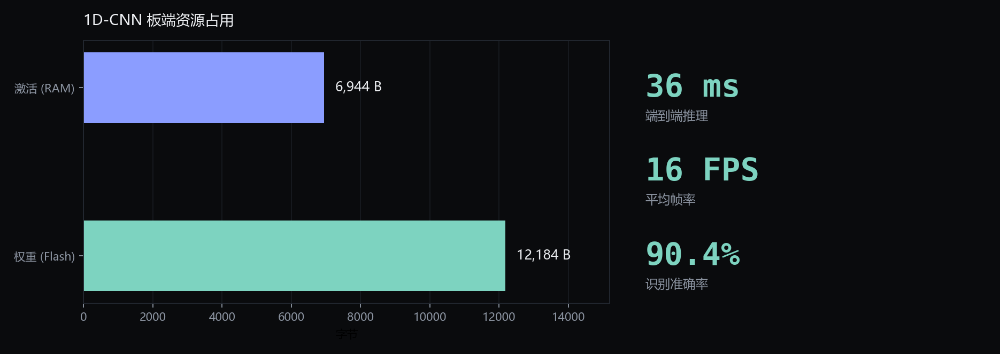
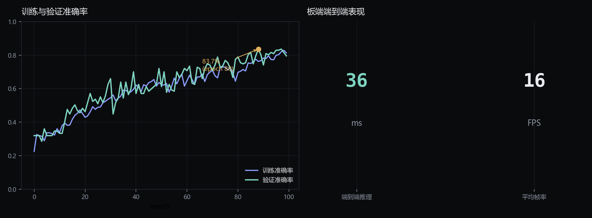

01板端实机
STM32N6570-DK 上实时跑两级模型，屏幕左下角显示当前推理耗时。
开发板实机 · 实时骨骼与动作分类

居家养老的跌倒预警里，穿戴设备依从性差、云端方案有隐私与带宽风险。 这个项目把姿态估计与时序动作分类全部放在端侧，原始图像不出设备，只上报结构化事件。
STM32N6570-DK 上实时跑两级模型，屏幕左下角显示当前推理耗时。
一个做「看见人」，一个做「看懂动作」。两级跑在同一颗 MCU 上，喂给不同的处理单元。
// 滑窗满 11 帧后展开成 374 维，按量化参数转 int8
const float input_scale = 0.0039199353f;
const int input_zero_point = -128;
int32_t q = (int32_t)roundf(val / input_scale) + input_zero_point;
// 推理后反量化取 argmax
const char* class_names[] = {"fall","rise","run","squat","stand","walk"};同一个人在不同距离、不同受试者之间，关键点的绝对分布差异很大，分类器会把体型当成特征。
做法是以左右肩-胯距离的均值作为躯干长度基准，逐帧平移、按躯干长度缩放， 再映射回 [0,1]，兼容现有 int8 模型的输入契约。归一化后，「1 个躯干长度」在图像里占多少像素都映射到同一区间。
def normalize_frame(frame, span=1.5):
kp = frame.reshape(17, 2)
length = compute_torso_length(kp) # 肩-胯距离均值
if length == 0: return frame # 关键点缺失时退化
center = torso_center(kp) # 肩胯四点均值
scaled = (kp - center) / (2 * span * length) + 0.5
return np.clip(scaled, 0, 1)自检用「同一姿态、不同拍摄距离」两组样本验证：原始坐标最大差异 0.1500，归一化后降到 0.0000。
板端只有几十 KB 的 RAM 可用，模型必须先压再上。

代表性数据集校准，输入输出全 int8，权重较 float 减少 74.1%。
幅度剪枝（渐进式稀疏调度）与结构化通道剪枝两套实现，剪枝后需恢复训练再量化。
100 epoch 的实际训练日志：验证准确率在 epoch 88 达到峰值 83.7%，末段趋于收敛。

从零到板端可运行，中间每一步都自己走过一遍。
PyQt 界面做视频抽帧、YOLO 关键点提取、滑窗切分与 CSV 落盘，标签按视频区间批量指定。
Keras 训练 → TFLite int8 量化 → 推理自检；量化参数与板端 C 代码保持一致。
STEdge AI 生成 C 模型，与 YOLO-Pose 应用层合并编译，烧录后板端直接运行。
三个脚本分别校验 episode 完整性、特征形状一致性、动作分布异常，避免脏数据进训练。